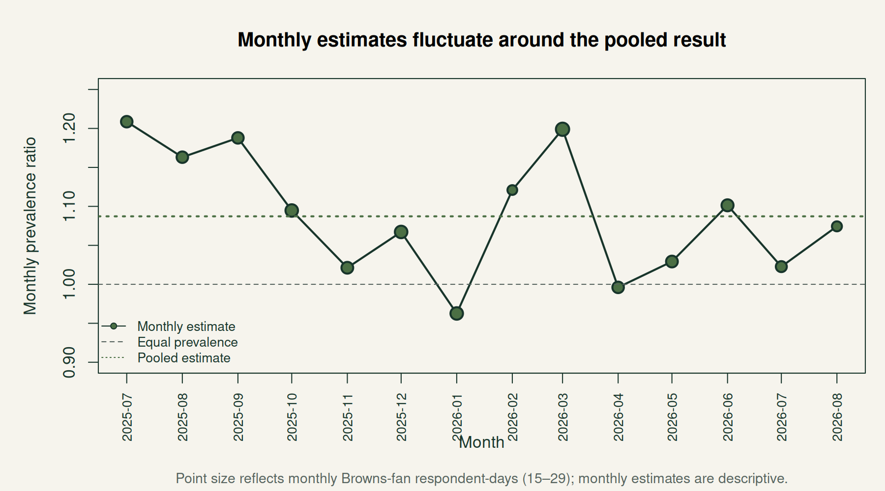

Among eligible Ipseity Daily respondent-days in the verified Zenodo snapshot, 83.23% of those endorsing Cleveland Browns fan also endorse happy, compared with 76.55% of those explicitly rejecting Browns fandom. The unweighted prevalence ratio is 1.087 (respondent-cluster bootstrap 95% interval 1.007–1.160). The difference is +6.68 percentage points (95% interval +0.56–+12.17 points).
These are contemporaneous self-descriptions. They do not establish a causal benefit of fandom or measure happiness with a multi-item psychological scale. The observation window is July 8, 2025–August 27, 2026, not the retrieval date of September 11, 2026.
Happy endorsement among 316 Browns-fan and 7,919 explicit non-fan respondent-days. The prevalence ratio is 1.087 with a respondent-cluster bootstrap 95% interval of 1.007–1.160.
Research question and estimand
RQ1 asks how frequently happy is endorsed among Cleveland Browns fans relative to explicit non-fans. Following Jones’s ipseological approach, identity signifiers are the words people use to describe themselves (Jones, 2023). Here the survey elicits Yes/No endorsement of supplied signifiers, rather than spontaneous words in a biography. Our inference concerns endorsement in that measurement setting.
The prevalence ratio is the proportion endorsing happy among Browns-fan respondent-days divided by the corresponding proportion among explicit non-fan respondent-days:
Both probabilities condition on eligibility below. A ratio of 1 means equal prevalence; 1.087 means approximately 8.7% higher relative prevalence, not 8.7 percentage points. A risk ratio has the same mathematical form, but usually concerns subsequent incident outcomes. “Prevalence ratio” is the PI-selected term for these contemporaneous measurements.
The primary estimand weights eligible respondent-days equally. Respondents with more eligible days therefore contribute more. Clustering the uncertainty does not give each person equal weight in the point estimate.
Data, provenance, and eligibility
Ipseity Daily provides response and demographics microdata; its instructions require an inner join on both hashed_respondent_id and obs_date(Jones, n.d.). The broader infrastructure is described by Jones (2026a).
The retrieved primary-host files were incomplete relative to the page’s advertised cumulative coverage. On September 11 they contained 10,570 response rows and 151 demographics rows, with eligible dates only July 8–14, 2025. We cannot establish why. We did not treat them as cumulative data. Instead, we retrieved the fixed Zenodo record 22139541 (Jones, 2026b), verified both published MD5 checksums, and recorded SHA-256 hashes. That archive contains 675,480 response rows and 8,776 demographics rows, with eligible observations through August 27, 2026.
Snapshot
Response rows
Eligible days
Last eligible date
PR
Verified Zenodo; current report
675,480
8,235
2026-08-27
1.087
Earlier saved result; inputs unavailable this iteration
677,121
8,253
2026-08-28
1.088
Primary-host retrieval this iteration
10,570
142
2025-07-14
1.192
The earlier result is retained as historical evidence, not an independently reproduced result. The short primary-host subset has a wide clustered interval (0.938–1.413) and is not a conflicting estimate of the same observation window. A changed URL response is a provenance issue, not evidence of a temporal trend.
The response columns are hashed_respondent_id, obs_date, signifier, and endorsed (1/0). An eligible respondent-day must have a valid demographics match and explicit binary answers to both target signifiers. An absent item is never No: signifier presentation is probabilistic and can change over time. Rows with the CONSENT_REVOKED sentinel are excluded before the join. Duplicate demographics keys stop analysis; identical target answers are collapsed, and conflicting target respondent-days are excluded.
The archive audit records 113 excluded consent-revoked demographics rows, 1,945 unmatched response rows, three collapsed identical target duplicates, and one excluded respondent-day with conflicting target answers. There are 8,235 eligible respondent-days from 4,686 respondents; 1,392 respondents contribute multiple eligible days (maximum 39).
The primary interval resamples respondents with replacement and retains all eligible days from each selected respondent. It uses 2,000 replicates, seed 20260828, and interpolated 2.5th and 97.5th percentiles. All 2,000 estimates were finite. The independent-respondent-day Katz interval is narrower (1.033–1.144) and is secondary because some people recur.
The clustered interval describes resampling uncertainty under independent respondent clusters. It does not account for common date shocks, selection bias, changes in presentation probabilities, or measurement error. Its lower bound is close to 1. Claims of a robust population difference would go far beyond this descriptive comparison.
Time sensitivity
month
fandom_yes_n
fandom_no_n
prevalence_ratio
2025-07
22
464
1.209
2025-08
22
602
1.163
2025-09
22
588
1.188
2025-10
26
595
1.095
2025-11
23
582
1.021
2025-12
26
584
1.067
2026-01
26
573
0.963
2026-02
15
551
1.121
2026-03
29
563
1.199
2026-04
22
553
0.996
2026-05
23
608
1.029
2026-06
24
579
1.101
2026-07
20
597
1.023
2026-08
16
480
1.074

Monthly prevalence ratios with point size proportional to Browns-fan respondent-day counts.
Twelve of fourteen monthly ratios exceed 1, with a range of 0.963–1.209. Each month contains only 15–29 fan respondent-days; the endpoints are partial months. These are descriptive checks, not a test of season or game effects. Pooling does not adjust for changing composition or presentation tiers. Weekly comparisons for RQ3 and all-team rankings for RQ2 remain future work.
Interpretation and limits
The narrow finding is that happy endorsement is more prevalent among observed Browns-fan respondent-days in this archive. Self-description should not be equated with clinical well-being, a stable trait, or an effect of winning games. The non-fan group can include fans of other teams and people who do not follow football.
Selection into the survey, recurrence, and co-presentation determine which respondent-days are represented. No known inclusion probabilities or weights for all U.S. Browns fans are available. Resampling does not turn the observations into a representative probability sample. Future work should compare equal respondent weighting and examine calendar composition before extending claims.
Appendix: demographic weighting
Per PI guidance, the primary comparison remains unweighted. The appendix uses eight age-by-sex cells (18–29, 30–44, 45–64, 65+, separately for Male/Female) from 2024 ACS B01001 (U.S. Census Bureau, 2025). All eight target counts were independently checked against the national summary-file row; the verification record is retained. The target is the U.S. adult resident population; the true distribution of Browns fans is unknown. Forty eligible days fall outside the complete numeric-adult-age/binary-sex coding, leaving 8,195 days.
Method
PR
Difference (pp)
All eligible; unweighted
1.087
6.678
Complete cases; unweighted
1.085
6.544
Pooled age-sex calibration
1.080
6.268
Common-distribution standardization
1.078
6.122
sex
age_group
fandom_yes_records
fandom_no_records
pooled_poststratification_weight
Male
18-29
28
542
1.470
Male
30-44
90
1723
0.596
Male
45-64
69
1157
1.019
Male
65+
9
248
3.304
Female
18-29
20
647
1.208
Female
30-44
34
1536
0.676
Female
45-64
51
1501
0.826
Female
65+
13
527
1.906
Pooled calibration gives each cell weight equal to its ACS adult share divided by its share of complete respondent-days. This yields PR 1.080 and a +6.27-point difference. Direct standardization averages each group’s cell-specific prevalence using the same ACS proportions, yielding PR 1.078 and +6.12 points. The latter asks about a hypothetical common demographic composition, not the observed U.S. fan and non-fan populations.
Fan cell counts range from 9 to 90; the largest pooled weight is 3.304. No uncertainty intervals are estimated for these exploratory weighted results. The similar point estimates show limited sensitivity to these particular adjustments, not robustness to unmeasured confounding or selection. Sex is used as recorded for calibration and is not recoded from gender identity.
This report was prepared by Aleph Initial Alpha, recovering and extending Ceetown’s estimator and interrupted report work. The current analysis was rerun from checksum-verified archive inputs. The historical August 28 JSON and draft are retained separately; they are not the current publication source.